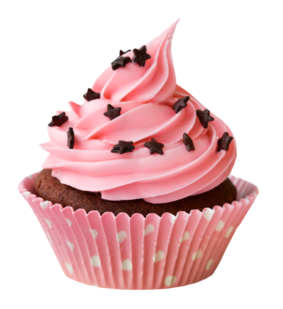

-
Ингредиенты Ингредиенты
- мука пшеничная 200 г.
- яйце продукты 2 шт.
- сахарный песок 20 г.
- масло сливочное 50 г.
- молоко сгущеное 100 г.
Срок хранения 120 часовSweet Cupcake
В основе пирожного Sweet Cupcake выпеченный бисквит, промоченный сахарным сиропом с добавлением коньяка и десертного вина. Прослоено суфлейной массой, смешанной с апельсиновым концентратом (калоризатор). Заглазировано шоколадной глазурью с нанесением сеточки из белой шоколадной глазури
199 ¤ Заказать
Почему так вкусно?
В основе пирожного Sweet Cupcake выпеченный бисквит, промоченный сахарным сиропом с добавлением коньяка и десертного вина. Прослоено суфлейной массой, смешанной с апельсиновым концентратом (калоризатор). Заглазировано шоколадной глазурью с нанесением сеточки из белой шоколадной глазури
- Лучшие повара своего дела
- Свежие ингредиенты
- Приготовлено с любовью